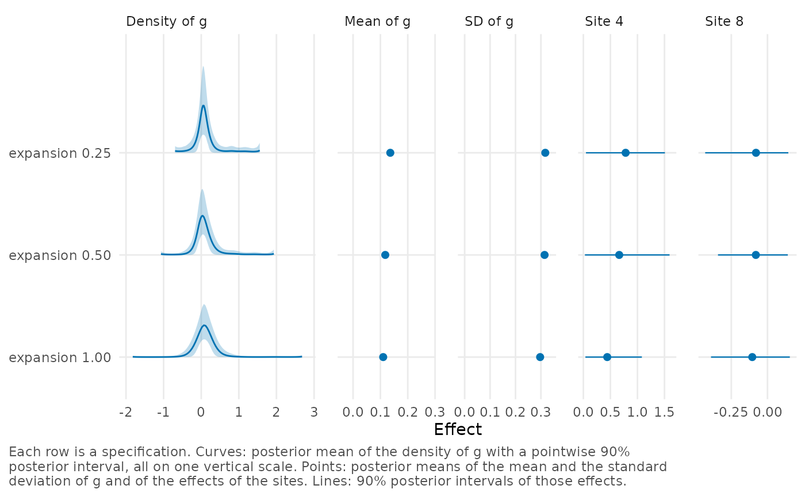

Compare fits on several grids (sensitivity analysis)
Source:R/grid-comparison.R
compare_efron_grids.Rdcompare_efron_grids() fits the model on several grids and returns a
table that compares the fits. The range of the grid, the number of grid
points, the type of component and the number of spline functions are
choices of the analyst, and the table shows how sensitive the results
are to these choices. The model is fitted once for each combination of
the specified values, called a specification. For each specification,
the table contains the posterior mean of the standard deviation of
\(g\), the posterior means of a few sites, sampler and grid
diagnostics, and elpd_loo, the expected log predictive density for a
new site estimated by leave-one-out cross-validation (see
loo.bef_fit()).
Arguments
- theta_hat
Numeric vector of effect estimates, one per site, all on the same scale (e.g., standardized mean differences or log odds ratios). Names, if present, are used as site labels. Can also be a data frame or a
bef_dataobject that contains the estimates and their standard errors (seeas_bef_data()), in which casesigmais omitted. At least 5 sites are required.- sigma
Numeric vector of standard errors of the estimates, the same length as
theta_hat. All must be positive.- L
Numbers of grid points to compare, a vector of integers from 51 to 401.
- M
Numbers of spline functions to compare, a vector of integers from 3 to 10.
- expansion
Expansion factors to compare, a numeric vector with values between 0 and 5. See the
expansionargument ofmake_efron_grid().- grid_method
Methods for choosing the limits of the grid, a character vector with one or more of the methods listed in the Details of
make_efron_grid(). The default is"paper_realdata", not"pilot"as inbayes_efron_fit(), so thatexpansiondetermines the range directly.- ...
Further arguments passed to
bayes_efron_fit()for every fit, e.g.,chains,iter_samplingorseed. Not used by theprint()method.- support
Numeric vector of length 2 with the lower and upper limits of the grid, or a list of such vectors to compare several ranges. If
supportis specified,grid_methodandexpansionare not used.- component
One or both of
"point"(the default) and"normal", the types of component to compare.- sites
Sites whose posterior means are reported, specified as a numeric vector of positions in the data or as a character vector of site labels. If
NULL(the default), the sites with the smallest and the largest estimates are used.- keep_fits
If
TRUE, the fitted objects are stored in thefitsattribute of the result.- x
A
bef_grid_comparisonobject returned bycompare_efron_grids().
Value
A data frame of class bef_grid_comparison with one row per
specification, sorted by decreasing elpd_loo (best first), and the
following columns.
specThe number of the specification, in the order in which the specifications were fitted.
L,M,expansion,grid_method,componentThe settings of the specification.
lower,upperThe lower and upper limits of the grid.
elpd_looThe expected log predictive density, estimated by leave-one-out cross-validation.
se_elpd_looThe standard error of
elpd_loo.p_looThe effective number of parameters as defined by the loo package. This is not the
effective_paramsof a fit.elpd_diffThe difference in
elpd_loofrom the first row.se_diffThe standard error of
elpd_diff.mean_gThe posterior mean of the mean of \(g\).
sd_gThe posterior mean of the standard deviation of \(g\).
site_<label>The posterior mean of the effect of a selected site, one column per site, named after the site label (e.g.,
site_4).max_rhatThe largest R-hat of the fit.
min_ess_bulkThe smallest bulk effective sample size.
divergencesThe number of divergent transitions.
max_pareto_kThe largest Pareto k.
end_massThe largest posterior mass that any site has in the outer 2% of the range at one end of the grid (see Details).
adequateTRUEif the grid is fine enough for the data (see Details).sampler_secondsThe sampling time in seconds.
The attribute g is a list, named by spec, with the density of
\(g\) for each specification as returned by g_summary(). The
attribute sites is a data frame with the rows of site_summary()
for the selected sites and a spec column. With keep_fits = TRUE,
the attribute fits contains the fitted objects.
Details
The column sd_g and the site columns show how the estimate of
\(g\) and the site effects change with the grid. By default the site
columns are for the sites with the smallest and the largest estimates,
which are the sites that a change of the grid affects most. To vary
only how far the grid extends beyond the estimates, specify several
values of expansion and a single value each for L and M.
The rows are sorted by elpd_loo, with the largest value first.
elpd_diff is the difference in elpd_loo from the first row, and
se_diff is the standard error of this difference. A difference of
less than about 2 standard errors is not enough to distinguish two
specifications, which is the usual case when there are few sites. Note
that elpd_loo measures how well a fit predicts the estimate of a new
site, and this is hardly affected by the limits of the grid. For
example, in the comparison of three ranges for raudenbush1985 that is
loaded in the examples, no fit differs from the best by 2 standard
errors, although the posterior mean of the study with the largest
estimate (column site_4) is much lower with the widest range than
with the narrowest. print() adds a note if no specification can be
distinguished from the best one.
A fit that has not converged should not be selected for its elpd_loo.
Each row therefore includes the largest R-hat, the smallest bulk
effective sample size, the number of divergent transitions and the
largest Pareto k of its fit. print() lists the rows with an R-hat
above 1.05, a divergent transition or a Pareto k above 0.7.
Two more columns check the grid of each fit. end_mass is the largest
posterior mass that any site has in the outer 2% of the range at one
end of the grid, that is, at its lower or upper limit, as reported by
diagnose(). A value above 0.05 means that the result for that site
depends on the limits of the grid. adequate is TRUE if the grid is
fine enough for the data, as defined in the Details of
make_efron_grid(). Warnings from the individual fits are suppressed.
With the default arguments, 9 models are fitted. Each fit uses the
default sampler settings of bayes_efron_fit() unless others are
specified through .... A message is shown as each fit starts (in
these messages, "rule" means the grid method). If a fit fails, a
warning is issued and its row has missing values, but the remaining
fits are still run. The function requires the loo package.
Examples
# Both need CmdStan.
if (FALSE) { # \dontrun{
# Nine fits of the firm-level callback gaps.
compare_efron_grids(krw_discrimination, seed = 20250807)
# How far the grid extends beyond the estimates, for the 19 studies.
compare_efron_grids(raudenbush1985, L = 101, M = 6,
expansion = c(0.25, 0.5, 1), sites = c(4, 8),
seed = 1985)
} # }
# The result of the second call is stored with the package.
comparison <- readRDS(system.file("examples", "raudenbush_ranges.rds",
package = "bayesEfron"))
comparison
#> <bef_grid_comparison> 3 specifications, best first
#>
#> In every row: grid_method = paper_realdata, component = point, L = 101, M = 6
#>
#> expansion lower upper elpd_loo se_elpd_loo elpd_diff se_diff mean_g sd_g
#> 0.50 -1.070 1.93 -5.22 4.38 0.000 0.000 0.118 0.314
#> 0.25 -0.695 1.56 -5.35 4.18 -0.127 0.300 0.136 0.317
#> 1.00 -1.820 2.68 -5.72 4.22 -0.494 0.537 0.110 0.297
#> site_4 site_8 max_rhat divergences max_pareto_k end_mass adequate
#> 0.663 -0.0802 1.00 0 0.142 1.35e-02 TRUE
#> 0.782 -0.0792 1.01 18 0.216 5.62e-02 TRUE
#> 0.442 -0.1050 1.00 0 0.276 2.66e-05 FALSE
#>
#> Rows with convergence or PSIS problems: 2
#> A specification that did not converge should not be selected on elpd_loo alone.
#>
#> Rows in which a site has more than 5% of its posterior in the outer 2% of the grid: 2
#>
#> elpd_loo does not separate these specifications: all are within two standard
#> errors of the best. Compare sd_g and the site columns.
plot(comparison)
